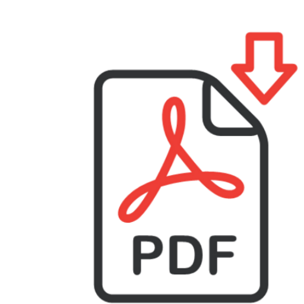

Bibliographie
Bibliographie autour du discours de haine
Ouvrages
(A paraitre) Lorenzi Bailly, Nolwenn et Claudine Moïse (éds.), Discours de haine et de radicalisation(s). Un glossaire des notions, Lyon, ENS Lyon.
Auteurs, autrices : Bilel Ainine, Laura Ascone, Fabienne Baider, Geneviève Bernard Barbeau, Thomas Bouvatier, Myriam Cremer, Xavier Crettiez, Béatrice Fracchiolla, Francis Grossmann, Mariem Guellouz, Claire Hugonnier, Rolf Kailuweit, Simo K. Määttä, Marty Laforest, Nicolas Lebourg, Lotta Lehti, Nolwenn Lorenzi Bailly, Emmanuel Meunier, Angeliki Monnier, Claudine Moïse, Alain Rabatel, Laurène Renaut, Michaël Rinn, Christina Romain, Laurence Rosier, Lorella Sini, Béatrice Turpin et Samuel Vernet.
(2021) Lorenzi Bailly, Nolwenn et Claudine Moïse (éds.), La haine en discours, Paris, Le Bord de l'eau.
Auteurs, autrices : Béatrice Fracchiolla, Mariem Guellouz, Nolwenn Lorenzi Bailly, Simo K. Määttä, Claudine Moïse, Martine Pons-Desoutter, Christina Romain, Laurence Rosier et Lorella Sini.
(2020) Sini, Lorella et Rosa Cetro (éds.), Fake news, rumeurs, intox – Stratégies et visées discursives de la désinformation, Paris, L’Harmattan.
Lorenzi Bailly, Nolwenn et Claudine Moïse, « Propagande, manipulation et malinformation », p. 183-198.
Attruia, Francesco et Lorella Sini, « ‘Le Grand Remplacement’ et la ‘sostituzione etnica’ : thèses complotistes et fake news dans les discours d’extrême droite », p. 289-306.
Numéros thématiques de revues
(2020) Bernard Barbeau, Geneviève et Claudine Moïse (coord.), LIDIL, n°61, « Le mépris en discours » (accès en ligne)
Baider, Fabienne, « Obscurantisme et complotisme : le mépris dans les débats en ligne consacrés à la vaccination » (télécharger le pdf)
Romain, Christina, Véronique Rey et Nolwenn Lorenzi Bailly, « La perception de mépris chez les élèves : télescopage de valeurs inscrites dans des systèmes idéologiques différenciés entre enseignant·es et élèves » (télécharger le pdf)
(2019) Baider, Fabienne et Maria Constantinou (coord.), Semen, n°47, « Discours de haine dissimulée, discours alternatifs et contre-discours » (accès en ligne)
Lorenzi Bailly, Nolwenn et Mariem Guellouz, « Homophobie et discours de haine dissimulée sur Twitter : celui qui voulaitune poupée pour Noël », p. 43-58
Renaut, Laurène et Laura Ascone, « Contre-discours au discours de haine djihadiste : de l’expression de la conflictualité à la fabrique du doute », p. 77-102
Moïse, Claudine et Claire Hugonnier, « Discours homophobe. Le témoignage comme discours alternatif », p. 121-136
Articles dans des revues
(2021) Baider Fabienne H. et Lorella Sini, « Le complotisme 'transnational' et le discours de haine : le cas de Chypre et de l'Italie », Mots. Les langages du politique, 125 | 2021, p. 15-34.
(2021) Vernet Samuel et Simo K. Määttä, « Modalités de l’homophobie en ligne : nouvelles chroniques de la haine ordinaire », Mots. Les langages du politique, 125 | 2021, p. 35-52.
(2020) Määttä, Simo K., Karita Suomalainen et Ulla Tuomarla, « Maahanmuuttovastaisen ideologian ja ryhmäidentiteetin rakentuminen Suomi24-keskustelussa » ('Construction de l'idéologie anti-immigration et de l'identité de groupe dans une discussion sur le site Suomi 24'), Virittäjä 2/2020, p. 191-217.
(2019) Ascone, Laura, « La radicalisation à travers l’expression des émotions sur internet », L’information grammaticale, 161, p. 44-46.
Chapitres dans des ouvrages
(2020) Fracchiolla, Béatrice et Christina Romain, « Réponse et traitement/réception de la violence et de la radicalité dans le discours gouvernemental en réponse aux attaques du 13 novembre 2015 », dans Béatrice Fleury et Jacques Walter (éds.), Violences et radicalités militantes dans l’espace public en France des années 1980 à nos jours, Paris, Riveneuve, p. 469-486.
(2018) Lorenzi Bailly, Nolwenn, Geneviève Bernard Barbeau, Claudine Moïse, Martine Pons, Christina Romain, et Samuel Vernet, « Tensions identitaires et discours de radicalisation », dans Carmen Alén Garabato, Henri Boyer, Ksenija Djordjevic et Bénédicte Pivot (éds.), Identités, conflits et interventions sociolinguistiques, Limoges, Éditions Lambert Lucas, p. 251-273.